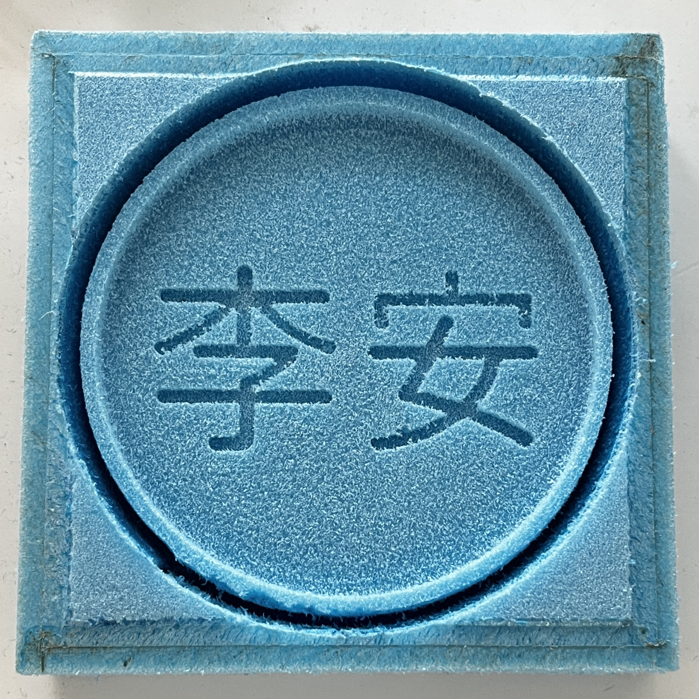
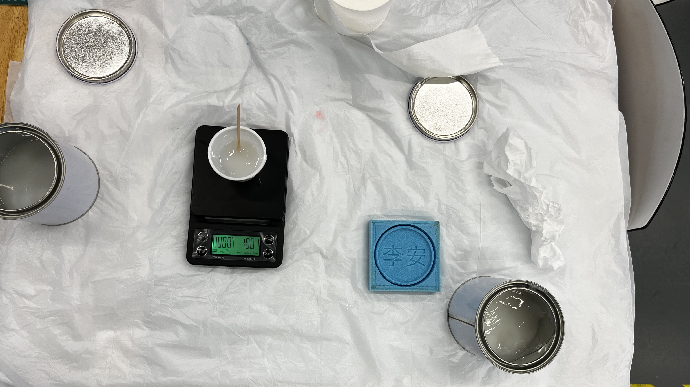

What is molding and casting?
Molding is the process of manufacturing by shaping liquid or pliable raw material using a rigid frame called a mold or matrix. This itself may have been made using a pattern or model of the final object. The liquid hardens or sets inside the mold, adopting its shape. A mold or mould is a hollowed-out block that is filled with a liquid or pliable material such as plastic, glass, metal, or ceramic raw material. A mold is the counterpart to a cast.
Casting is a manufacturing process in which a liquid material is usually poured into amold, which contains a hollow cavity of the desired shape, and then allowed to solidify. The solidified part is also known as a casting, which is ejected or broken out of the mold to complete the process.
Assignments
- Review the safety data sheets for each of your molding and casting materials.
- Design a mold around the stock and tooling that you will be using.
- Mill it (rough cut & three-axis finish cut) and use it to cast parts.
There were 2 foam thickness provided to us to carry out our assignment; 25mm and 50mm. It is important to keep in mind that there has to be at least 4mm to 5mm of allowance for the base. With the design parameter in mind, we can begin designing our mold.
After completing our mold design, we can begin generating our tool path.
- Switch from "DESIGN" to "MANUFACTURE" on the top left.
- Create a new "Setup".
- Select a toolpath algorithm (ie. "Adaptive Clearing") then double click the toolpath algorithm tab to select the tool.
- note: you may need to right click on the "Fusion 360 Library" tab to "Turn all libraries on".
- Select "Milling Tools (Metric)" and select the respective tools we need (ie. 3mm Flat Endmill for roughing and 2mm Flat Endmill for finishing).
- Select on the edit tool then select the "Cutter" tab to change the properties of the tool.
- note: most importantly, the "Length below holder" and "Shoulder length" has to be larger than the thickness of the stock foam or the deepest cut pass in your design.
- On the right floating window, under "Tool" tab, disable coolant, set spindle speed at 12000 rpm and set cutting feedrate as 1200mm/min.
- Under "Geometry" tab, turn on "Stock Contours" and set it as necessary (typically the deepest cut pass). For roughing, turn off "Rest Machiing" and turn it on for finishing.
- Under "Passes" tab, for roughing, turn on "Stock to Leave" and turn it off for finishing.
- After generating your toolpath, right click on the toolpath algorithm tab and "Simulate" to do a sanity check.
- When completed, right click on the toolpath algorithm tab again and click "Post Process". Under "Post", click on "Select post from the library" and click on "Import" to select the Stepcraft-UCCNC post processor library. Finally, press "Post".
- note: it is important to download the Stepcraft-UCCNC post processor for this step.
- From what we learned in Electronics Production we can now cut out the foam. Draw two lines from the corner of each stock to find the zero point as the center.
When completed, the foam piece should look like this.
Next we will mix in the two silicon mixture with one another 1:1 by weight. It is important to take your time and mix them in together slowly as to avoid trapping too much air bubbles. When completed, it should look like it does on the right.
|  |  |